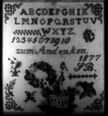

Here's a photograph of a sampler made by Susanna Elizabeth nee Bieri Wyss. On the back her daughter Milda nee Wyss Miller wrote the following inscription: "Made in Switzerland by my mother Susanna Bieri Wyss when she was 10 years old. Born in Switzerland Jan 14th 1867. Died in Croton Oct. 22, 1915."
Last updated on 26 Oct 1998